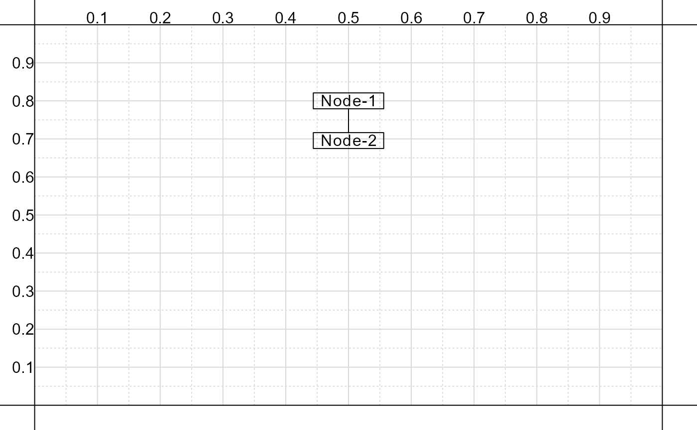

pd_node.RdAdds specifications to draw a new node to an existing list that can then be passed to the [pathdiagrams::pd_draw_nodes] function.
pd_node(
lst,
node,
xy = NULL,
wh = NULL,
string = "",
shape = "rectangle",
from = NULL,
to = NULL,
args.polygon = NULL,
args.text = NULL,
args.arrows = NULL,
ignore_asterisk = TRUE
)A list.
A character string, the name of the node (note that the period symbol should not be used when naming nodes).
A named numeric vector where xy['x']
specifies the x-axis value and xy['y'] specifies
the y-axis value for the center of the node. Values
should range from 0 to 1 (the fraction of the plotting
window). If left as NULL, users can use the
argument from to specify the node position instead.
A named numeric vector where wh['w']
specifies the width and wh['h'] specifies
the height of the node. Values should range from 0
to 1 (the fraction of the plotting window). Setting
values to NA will result in the function
inferring the relevant dimension size from the
node's text content.
A character string, the text content
for the node. Text can be bracketed by one or
two asterisks to produce italics or bold text,
respectively. Set ignore_asterisk to
FALSE to suppress this behavior.
A character string, either 'rectangle'
or 'ellipse', indicating the shape of the node
to draw.
An optional named vector of two values, giving the offset from a specified node for the x and y-axis. Units are relative. Height is relative to a node using one line of text. Width is relative to the referent node (e.g., a value of -2 for the y-axis will place the new node to the left of the referent node based on twice its width). Names for the vector are the referent node, followed by a period, followed by the location on the referent node to use as reference (e.g., 'N01.bottom'). If no referent node is specified uses absolute x and y-axis values instead.
A character vector, where each string
indicates the arrows from the current node
and where they should connect to. Format is
'<location> - <node>.<location>' where
location is either top, topright, right, bottomright,
bottom, bottomleft, left, or topleft, and node is the
node name to connect to. Users can indicate the
type of arrow to draw using '-' (line),
'->' (arrow to new node), '<-'
(arrow to old node), '<->' (arrows on
both ends).
A named list with additional arguments to pass to the [graphics::polygon] function.
A named list with additional
arguments governing text (cex for text
size, col for color, and spacing
for gap between text).
A logical value, if
FALSE suppresses behavior determining
italic/bold text via asterisks.
A named list with additional arguments to pass to the [graphics::arrows] function.
A list with a new element named node.
pd_base_figure( default = '5 x 5' )
lst_inputs <- list() |>
pd_node( 'N01', c(x = .5, y = .8), string = 'Node-1' ) |>
pd_node( 'N02', string = 'Node-2',
from = c( N01.center = 0, N01.bottom = -1.5 ),
to = 'top - N01.bottom' )
pd_draw_nodes( lst_inputs )
